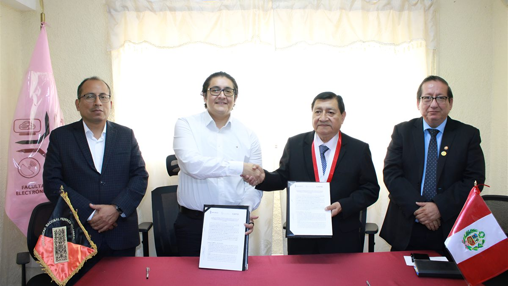

Noticias FIEI ·
FIEI y CAENE firman acuerdo para acercar a estudiantes y docentes al sector empresarial
El convenio promueve nuevas oportunidades de colaboración entre la comunidad universitaria y el ámbito empresarial.

La Facultad de Ingeniería Electrónica e Informática y el Consejo de Analistas Económicos Nacionales (CAENE) firmaron un acuerdo para fomentar la colaboración entre estudiantes, docentes y organizaciones del sector empresarial.
La alianza busca abrir espacios de intercambio, difusión de oportunidades y participación en actividades que acerquen a la comunidad FIEI a los retos profesionales actuales. También contempla impulsar iniciativas de innovación y emprendimiento.
Con este vínculo, la Facultad continúa promoviendo experiencias que complementan la formación académica y amplían las redes de colaboración para sus cuatro programas de ingeniería.